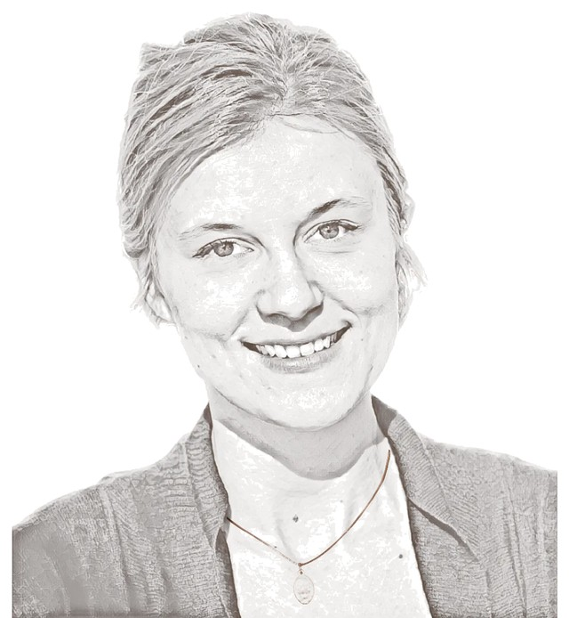

Paulina Lenik
Political economist · Jagiellonian University, Kraków
I study populism, institutional trust and electoral behaviour in Central and Eastern Europe, using quantitative methods: survey data, multilevel and spatial models, and causal designs for regional policy.
I hold a PhD in Economics from UCL’s School of Slavonic and East European Studies, where I was an Early-Stage Researcher on the Horizon 2020 project FATIGUE, and an MSt in Diplomatic Studies from the University of Oxford. Before academia I worked at the EU Delegation to Uzbekistan, the European Parliament and the Polish Mission to the UN.
Research
Journal articles
- 2026 From protest to piety: the cultural consolidation of PiS voters in Poland East European Politics
- 2025 The gender gap in the populist vote: the Bulgarian and Hungarian cases East European Politics and Societies
- 2024 Cut from the same cloth? Identifying a difference between populist parties in CEE and Western Europe East European Politics
- 2024 Defining and researching populist parties in Central and Eastern Europe with Natasza Styczyńska · Teoria Polityki
- 2024 A thickened demand for populism: comparison of voters’ attitudes in CEE and Western Europe Post-Communist Economies
- 2023 Trusting the untrustworthy: an exploration of attitudes towards the populist government in Poland using survey data Europe-Asia Studies
Book chapters
- 2025 Trapped in the feudal past? Examining the difference in welfare preferences between the CEE and the West In The Anatomy of Right-Wing Populism: Dealing with Transformational Fatigue in Central and Eastern Europe, UCL Press
- 2023 The two dissimilar cases of a rise in populism: Poland and Czechia In Faces of Populism in Central and South-Eastern Europe, Jagiellonian University Press
- 2022 Market transformation under Fidesz: energy and banking policy review since 2010 In Contemporary Populism and Its Political Consequences
Working papers
- 2026 Affective polarisation in CSES Module 6: a replication pipeline and an exploratory test of GenAI occupational exposure SocArXiv preprint
Commentary
- 2020Whither dataveillance? Polish data harvest in times of pandemic
- 2020Polish populism in times of pandemic
- 2020Why the haste? Polish presidential elections, PiS and constitutional conundrum
- 2020The “good change”: Polish populist presidential campaign 2015 and now (with Carolin Heilig) · SSEES Research Blog
Teaching
- NowIntroduction to Economics · lecture course, Jagiellonian University
- 2023Introduction to Econometrics · postgraduate, Kozminski University
- 2020–21Economics of Transition; Applied Game Theory; Quantitative Methods; International Business · teaching assistant, UCL SSEES
Associate Fellow of the Higher Education Academy (UK).
CV
- 2024–Assistant Professor in Political Economy · Jagiellonian University, Kraków
- 2023–24Assistant Professor in Economics · Kozminski University, Warsaw
- 2022–23Attaché, Economic Department · EU Delegation to Uzbekistan
- 2023PhD in Economics · UCL School of Slavonic and East European Studies
- 2018MSt in Diplomatic Studies · University of Oxford
- 2014MA in European Studies · Jagiellonian University
Contact
p.lenik@uj.edu.pl
Jagiellonian University, Kraków, Poland